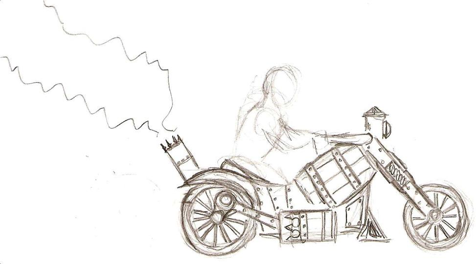

Cyclus Previous Versions¶
{kind=link}
The following are release notes for and links to previously released versions of Cyclus:
| Version | Date | Zip | Tar |
|---|---|---|---|
| 1.1.0 | 2014-09-19 | zip 1.1.0 | tar 1.1.0 |
| 1.1.0-rc1 | 2014-09-16 | zip 1.1.0-rc1 | tar 1.1.0-rc1 |
| 1.0.0 | 2014-05-30 | zip 1.0.0 | tar 1.0.0 |
| 1.0.0-rc4 | 2014-05-30 | zip 1.0.0-rc4 | tar 1.0.0-rc4 |
| 1.0.0-rc3 | 2014-05-27 | zip 1.0.0-rc3 | tar 1.0.0-rc3 |
| 1.0.0-rc2 | 2014-05-26 | zip 1.0.0-rc2 | tar 1.0.0-rc2 |
| 1.0.0-rc1 | 2014-05-24 | zip 1.0.0-rc1 | tar 1.0.0-rc1 |
| 0.4.4 | 2014-05-01 | zip 0.4.4 | tar 0.4.4 |
| 0.4.2 | 2014-03-06 | zip 0.4.2 | tar 0.4.2 |
| 0.4.1 | 2014-02-27 | zip 0.4.1 | tar 0.4.1 |
| 0.4 | 2014-02-13 | zip 0.4 | tar 0.4 |
| 0.4-rc1 | 2014-02-09 | zip 0.4-rc1 | tar 0.4-rc1 |
| 0.3 | 2013-10-28 | zip 0.3 | tar 0.3 |
| 0.3-rc1 | 2013-10-25 | zip 0.3-rc1 | tar 0.3-rc1 |
| 0.2 | 2013-07-17 | zip 0.2 | tar 0.2 |
| 0.2-rc1 | 2013-07-12 | zip 0.2-rc1 | tar 0.2-rc1 |
| 0.1 | 2012-03-27 | zip 0.1 | tar 0.1 |

Previous page
Next page
Useful Pages
- User Guide
- Archetype Developer Guide
- Cyclus API Documentation
- Cycamore API Documentation
- Glossary
- Join the Cyclus Users mailing list.
- Join the Cyclus Developers mailing list.
Get Cyclus
Current version: 1.1.0
Install:
$ conda install cyclus cycamoreAcknowledgements
The Cyclus project has received support from:In addition, some of the students working on Cyclus have received support from: